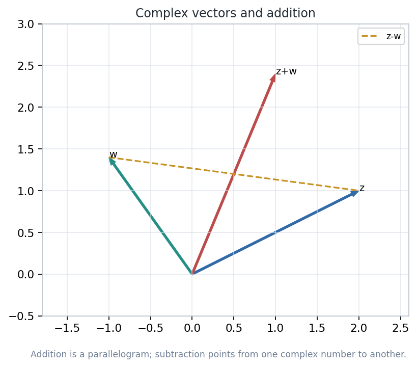
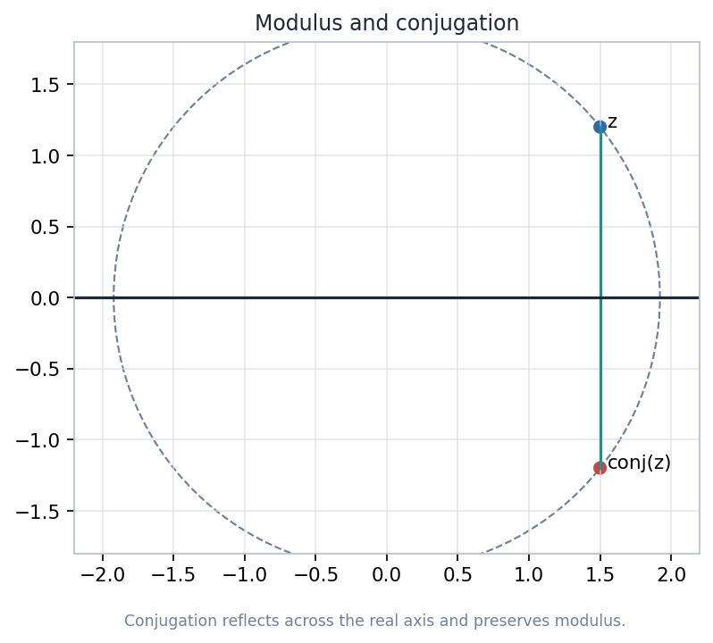
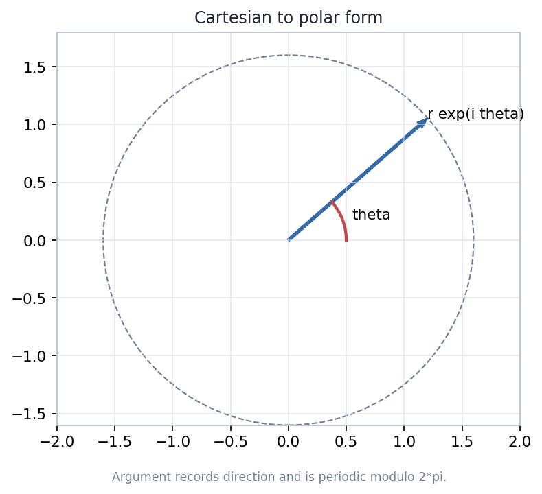
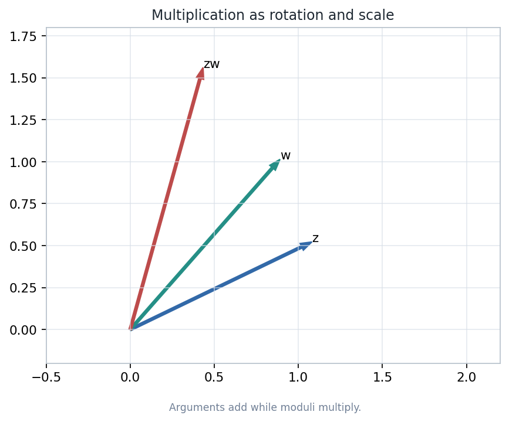
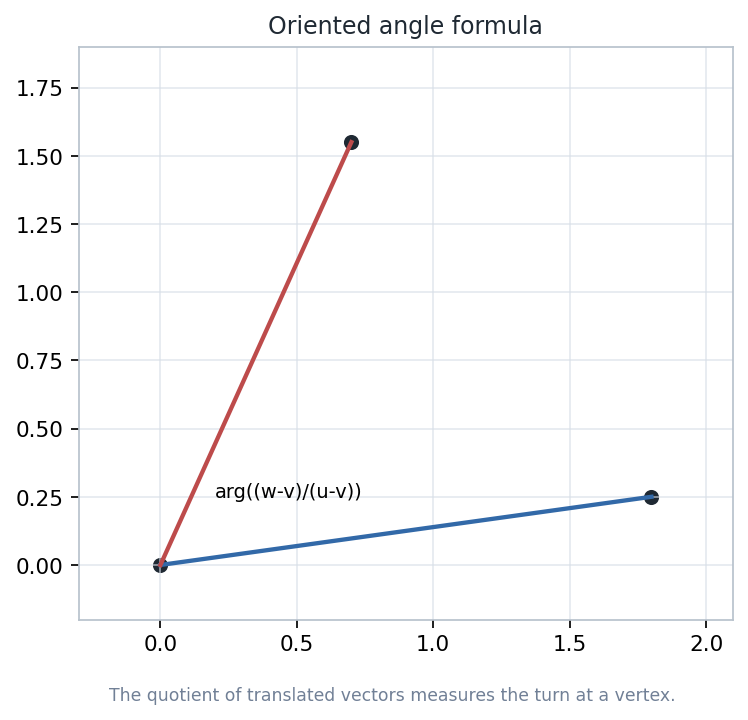
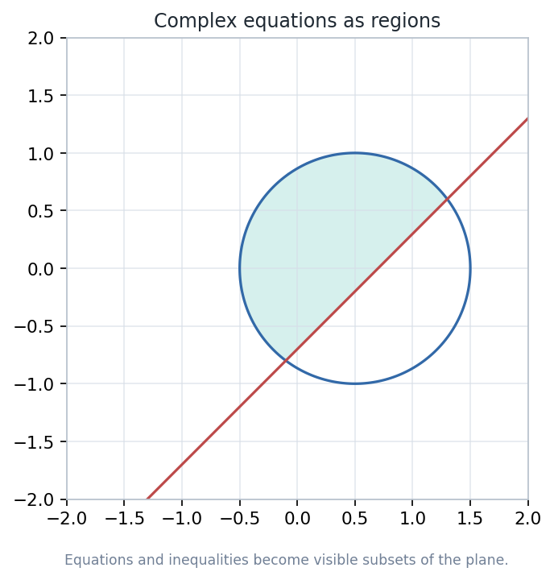

Complex numbers will serve as points, vectors, rotations, scales, and compact formulas for loci before the course moves into transformations and non-Euclidean models.
Read \(z=x+iy\) as a point and as a displacement from the origin.
Use \(|z|\) and \(\overline z\) to encode distance and reflection.
Use polar form so multiplication becomes scale plus turn.
Translate equations into visible subsets of the plane.
Source span: printed pages 15-28; PDF pages 25-38. Notebook: Geometry-with-an-Introduction-to-Cosmic-Topology/chapter-02-the-complex-plane/02-the-complex-plane.ipynb






| Recorded item | Value | Meaning |
|---|---|---|
| Visual count | 6 | Six generated diagrams support the chapter route. |
| Product residual | 0.0 | Polar and Cartesian multiplication agree in the check. |
| Minimum pixel standard deviation | 24.47 | Saved figures are visibly nonblank. |
| Status | ok | The generated diagnostic file reports success. |
Complex arithmetic is useful because each operation carries geometric information: addition moves, conjugation reflects, modulus measures, multiplication rotates and scales, division compares, and equations carve out loci.
Name the model, transformation, and measurement before manipulating symbols.
Use a diagram to identify which part of the formula has geometric content.
Pair formulas with numerical or visual diagnostics that can fail.
Use this language for inversions, clines, Mobius maps, and cosmic topology models.